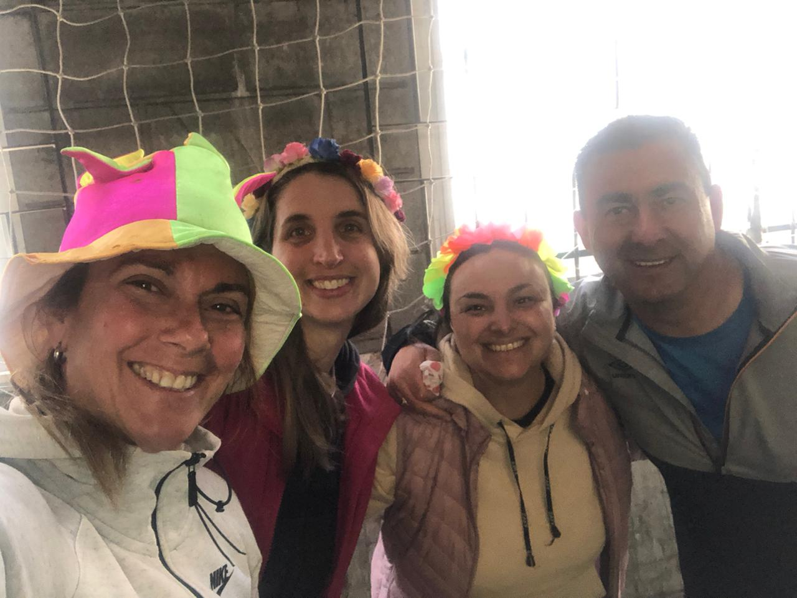

JORNADA DEPORTIVA-RECREATIVA EN BELAUSTEGUI
Por Agustín Tevez de 2 º B
El pasado martes 4 de octubre se realizaron diversos juegos en el Complejo Deportivo Belaustegui en el que participaron todos los alumnos de la secundaria. Fue organizado por los profes de educación física Mariel Ladra, Patricia Russo, Verónica Furgiuele, y Gustavo Farías. Los juegos fueron variados como: caminar con bolsas, caminar con zancos, formar letras con personas entre otros. Después de realizar estas actividades, los alumnos fueron divididos en dos grupos. El primer grupo se fue a jugar al fútbol en una cancha y el segundo grupo se quedó en la otra cancha jugando al quemado. Lamentablemente no puede observar el partido de fútbol pero les puedo contar del juego del quemado. Fue bastante bueno aunque haya quedado en empate, me mantuvo enganchado. Y así finalizó el día… no estuvo mal.
